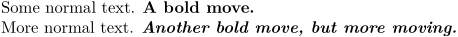
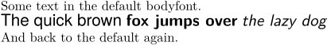

Contents
Summary
The command \style is generally usable to change the font style.
Settings
Settings argument
Description
Examples
simple use
You can use it as a command or as a switch:
-
Some normal text. \style[bold]{A bold move.} More normal text. {\style[bolditalic]Another bold move, but more moving.}
- 
own style (from the source)
-
\definestyle[one][style=bold,color=darkblue] test \one{test} test test \style[one]{test} test test \style[color=red]{test} test test \style[Serif at 20pt]{test} test
-

You can change font as well
-
Some text in the default bodyfont. \style[style={\switchtobodyfont[heros,10pt]}]{The quick brown} \style[style={\switchtobodyfont[heros,10pt]\bf}]{fox jumps over} \style[style={\switchtobodyfont[heros,10pt]\it}]{the lazy dog} And back to the default again.
- 